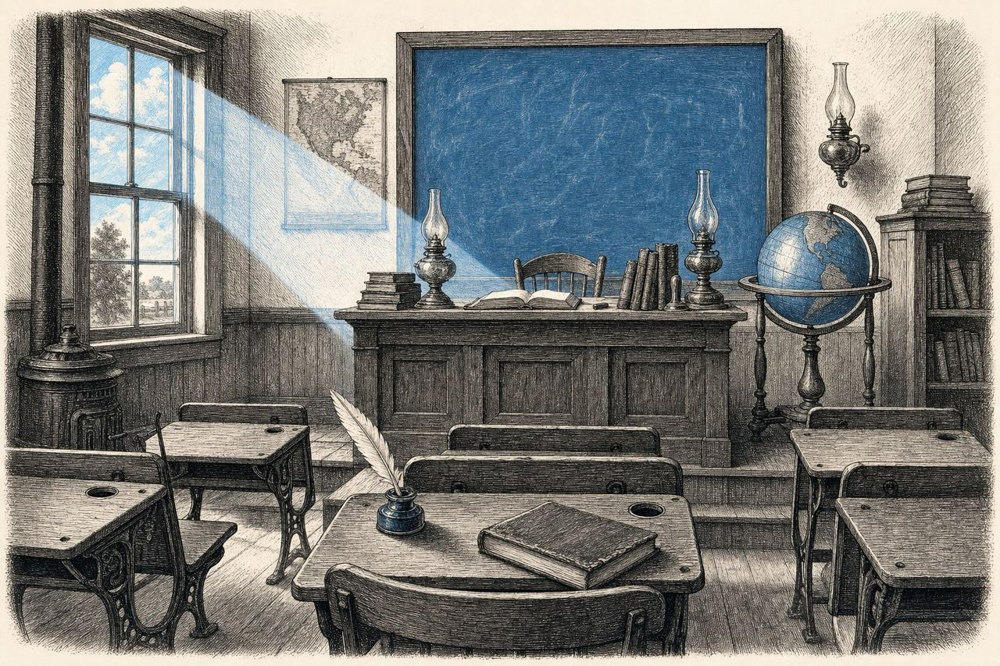
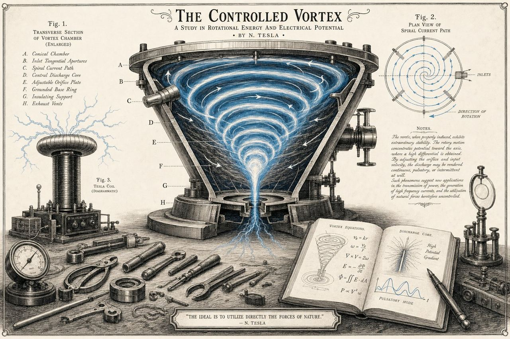
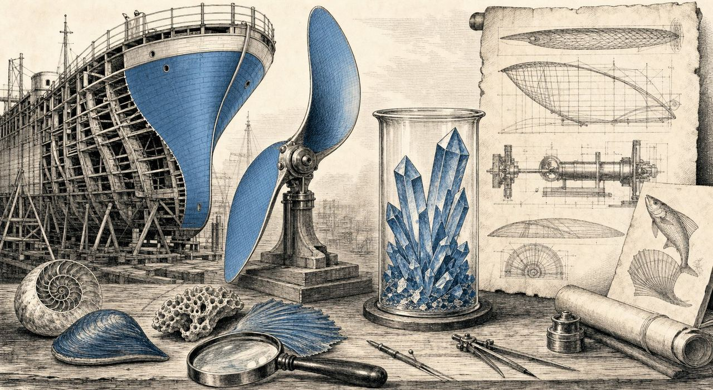
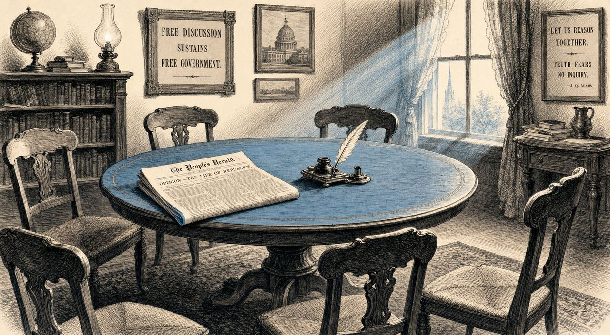

Девять текстов об одной мысли

Зачем эта газета?
Изобретатель, пишущий о демократии, — звучит странно, пока Вы не поймёте, что это всё одно и то же.

Трёх измерений недостаточно
Модель с семью измерениями для взгляда на мир, вселенную и общество.

Что не так с партийной политикой?
Альтернатива: Nova Democratia — решения по каждому вопросу отдельно.

От учебной фабрики к мастерской
Почему школа, выпускающая сто троечников, стоит меньше, чем школа, выпускающая пятьдесят отличников.

Термоядерный реактор без магнитной клетки
Представьте сливное отверстие, в котором вода вращается всё быстрее. Теперь сделайте то же самое с плазмой.

Всё течёт
Воздух, кровь, деньги, идеи и плазма подчиняются удивительно схожим законам. Почему этому никто не учит?

То, что уже создано
SeaSkin, GuardSkin, AeroSkin, TerraClean — работающие технологии, ожидающие масштабирования.

Как всё взаимосвязано
Одна нить через семь тем: перестаньте думать в ячейках, начните думать потоками.

Как участвовать в обсуждении
Правила, ИИ-модерация и первые вопросы, на которые я жду Ваших ответов.